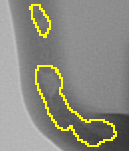
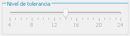
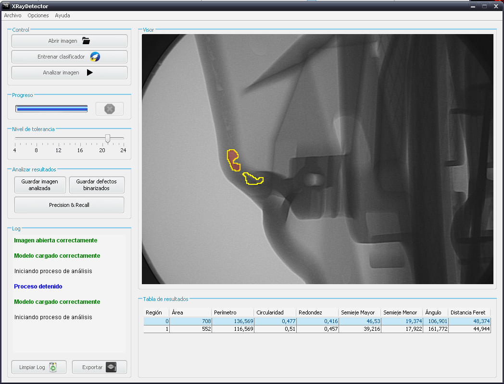
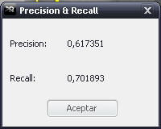

En este documento se explica con detalle cómo manejar los resultados que ofrece XRayDetector después de terminar un proceso de detección de defectos.
Al terminar el proceso de detección, si la aplicación detecta algún defecto, éstos aparecerán dibujados con una línea de color amarillo sobre la imagen original:

Si considera que el resultado es poco ajustado, o que se ha pasado al ajustar y ha cortado partes del defecto, puede cambiar el umbral de detección moviendo el slider:

Cada vez que lo mueva, se volverán a dibujar los defectos.
Cuando se termina el proceso y se dibujan los defectos, la aplicación también muestra una tabla con una serie de mediciones geométricas sobre los defectos encontrados. Estas características geométricas son:
Como hemos visto, la tabla muestra una serie de cracterísticas geométricas de los defectos encontrados. Por lo tanto, tenemos una fila por cada uno de los defectos.
Esta tabla no es estática, si no que permite una cierta funcionalidad. Por un lado, si hacemos click sobre una de las filas, el defecto correspondiente se ilumina en rojo.
Por otro lado, se permite seleccionar un defecto dibujado para iluminar automáticamente la fila a la que corresponde. Para ello, mantenga pulsada la tecla CONTROL, con lo que verá que el icono del cursor cambia a una mano, y haga click con el botón izquierdo en un punto dentro del defecto que desee. Entonces, se iluminará la fila de la tabla a la que corresponde.

Se puede exportar la imagen que se ve en el visor mediante el botón Guardar imagen analizada del panel RESULTADOS.
Mediante el botón Guardar defectos binarizados del panel RESULTADOS se permite guardar la binarización que realiza la aplicación para dibujar defectos.
Se puede calcular las medidas de precisión y sensitividad mediante el botón del mismo nombre en el panel RESULTADOS. Se abrirá un exlplorador para que indique la máscara que corresponde a la imahen analizada. Es obligatorio escoger una, pues no se pueden realizar los cálculos sin ella. Una vez elegida, se abrirá un diálogo con la información deseada:
